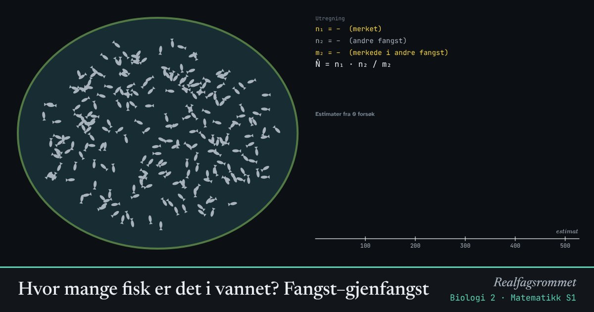

Hvor mange fisk er det i vannet? Fangst–gjenfangst
Vi kan ikke telle alle fiskene i et vann. I stedet fanger vi noen, merker dem og slipper dem ut igjen. Andelen merkede fisk i en ny fangst forteller hvor stor hele bestanden er.
Start animasjonen
Formler
Om animasjonen
er antall fisk som fanges og merkes første gang. er antall fisk i den andre fangsten, og er hvor mange av dem som var merket.
Ideen er at andelen merkede fisk i den andre fangsten er omtrent den samme som andelen merkede fisk i hele vannet. Det gir Lincoln–Petersen-estimatet .
Metoden forutsetter at fiskene blandes godt, at merkene ikke faller av, at merkede fisk ikke er lettere eller vanskeligere å fange, og at ingen fisk blir født, dør eller flytter mellom fangstene.
Histogrammet viser mange gjentatte forsøk. Estimatene sprer seg rundt den sanne verdien. Større fangster gir mindre spredning.
Prøv dette
- Gjør ett forsøk og regn ut estimatet for hånd.
- Gjenta forsøket mange ganger. Hvor nær den sanne bestanden kommer gjennomsnittet?
- Hva skjer med spredningen hvis du fanger flere fisk hver gang?
- Hva blir feil hvis de merkede fiskene lettere blir spist av rovfugl?
Kompetansemål
- Matematikk S1: Simulering av stokastiske forsøk
- Matematikk S1: Utvalg og estimering
- Biologi 2: Biologiske undersøkelser og metodevalg
- Biologi 2: Populasjoner: vekst og forvaltning
- Biologi 2: Artsmangfold og feltarbeid
Mer om statistikk og sannsynlighet
- Sentralmål og spredningsmål
- Standardavvik steg for steg
- Trekning fra urne: binomisk og hypergeometrisk
- Galtonbrettet og normalfordelingen
- Sentralgrensesetningen
- Hypotesetesting
- Helsepåstander: relativ og absolutt risiko